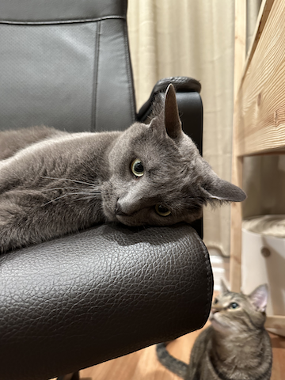
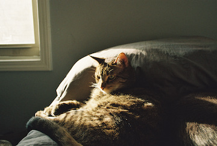

I have two cats whose names are Mr. Robot and Pi. Mr. Robot is an adopted grey cat with a pretentious attitude. Pi is a small tabby who is very vocal.
He was found under a tree in a park by animal control when he was around 6 months old. He is the least affectionate and most independent of the two cats. The interesting thing about Mr. Robot is that he was originally my brother's cat. In fact, I used to hate cats before I met Mr. Robot. However, I ended up taking care of him for a few months. During that time, he and I got to interact a bit more. When it was time for my brother to take him back, he did not want to go. He wouldn't let my brother touch him and would hide under my bed. When he did come out, he would walk past my brother as if he didn't exist but would come to greet me. His personality was interesting and troublesome. He loved to climb in places he shouldn't have and enjoyed making a mess in the middle of the night as he ran around the house by himself. Moreover, he knows exactly when it's time to eat and starts to meow and follow me around if I am not on his schedule.
Despite all of this, He is a very nice cat. He has never been aggressive with anyone and is usually very shy with people. Any time someone he does not know comes around; he will more than likely hide under the bed for the whole duration. If he does come out, he will usually only watch the person from a far distance. Like many cats, he pretty much sleeps all day and enjoys looking out of the window. He decides he wants to play around 11 p.m. This usually consists of him flinging his mouse across the floor and chasing it. At the time of this writing, he is about 3 years old and still very energetic. The only trick he knows how to do is sit on command. Other than that, he basically does whatever he wants.
My second cat is a tabby whose name is Pi. I named him Pi after the small computer called a Raspberry Pi. I felt that this went well with Mr. Robot's name. My mother adopted Pi for me as a Christmas present in 2021. One day we went to visit Pi in the shelter, and I said no to getting another cat. Despite this, the next day my mom went to pick him up and I'm glad she didn't listen to me. Pi is about 2 years old now and his favorite thing to do outside of the usual window watching would be screaming for no reason. Everyone will be minding their business and if Pi is bored, he will just start howling in a way. Pi like I mentioned earlier is much more affectionate. For the most part, he follows me around and likes to sleep on top of me. Possibly the most interesting thing about Pi is that he is incredibly small for a cat but thinks he is some kind of lion. He is a bully and will bother other cats, particularly my mother's cats. He does not bother Mr. Robot and if he does Robot will quickly shut it down. But when it comes to my mother's cats for some reason, he just likes to bother them either by chasing them or kicking them out of where they are sleeping so he can lay there. For the most part, all the cats live peacefully and stay in their respective rooms.
Cats make great pets because, for the most part, the only thing you have to do is feed them and clean their litter box. From time to time, they do feel like playing and it's important to keep them entertained. But overall, they are very easy pets who sleep all day. Possibly the best part about a cat is that unlike most dogs they don't just like everyone. So, in that sense, it becomes somewhat more special when a cat does like you. I also feel like cats have stronger personalities and that makes them interesting. They do weird and dumb stuff which sometimes gets annoying but overall, it's enjoyable to watch. I do like seeing the cats interact with one another and how they communicate with each other primarily based on body language. All in all, cats are cool and if you're thinking about getting a pet, consider adopting a cat especially senior cats who have a hard time getting adopted.
One of my favorite personality traits of cats is that they can be incredibly rude, so enjoy this video.